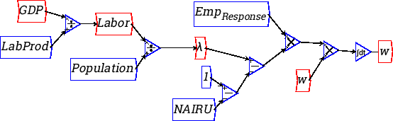

Wire represent the flow of values from one operation to the next. To add a wire to the canvas, click on the output port of an operation or variable (right hand side of the icon in its initial unrotated orientation), and then drag it towards an input port (on the left hand side of an unrotated icon). You can't connect an operator to itself (that would be a loop, which is not allowed, unless passing through an integral), nor can an input port have more than one wire attached, with the exception of +/- and , where the multiple wires are summed or multiplied, respectively.
Wires can be bent by dragging the blue dots (``handles''). Every time a handle is dragged out of a straight line with its neighbours, new handles appear on either side. Handles can be removed by double-clicking on them.